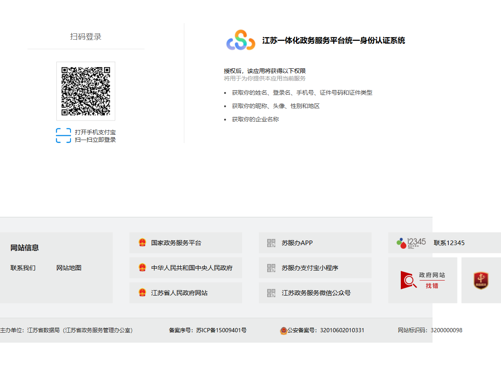
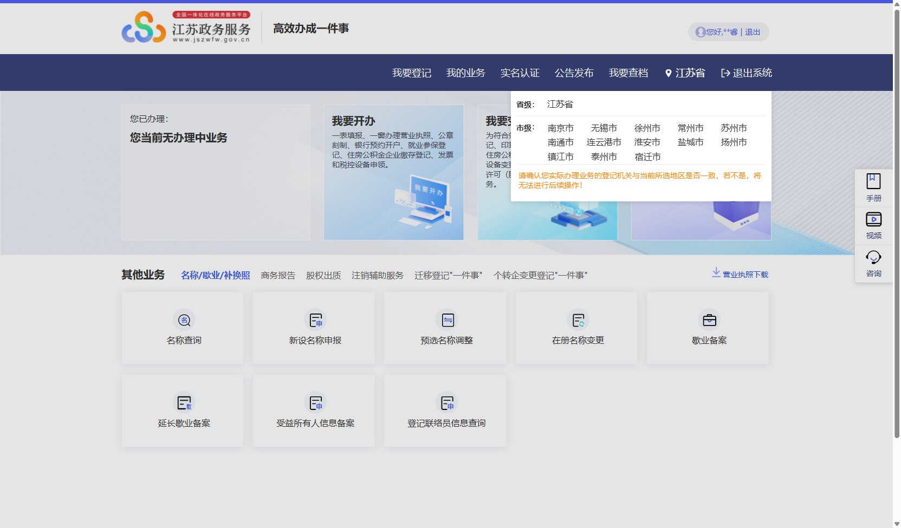
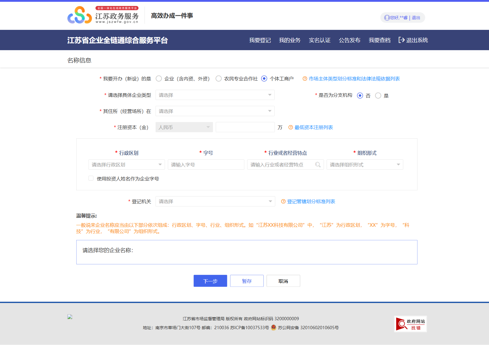
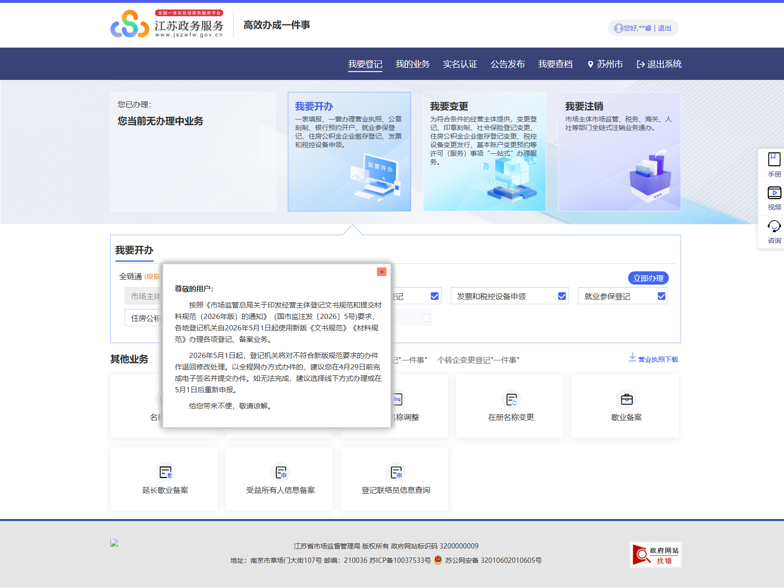
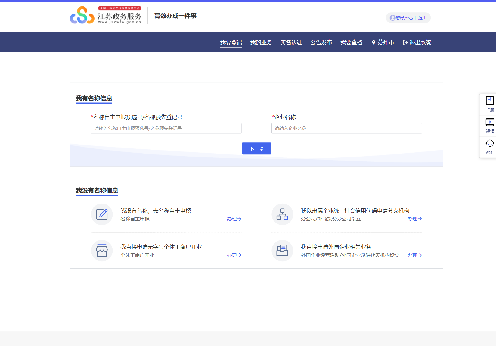
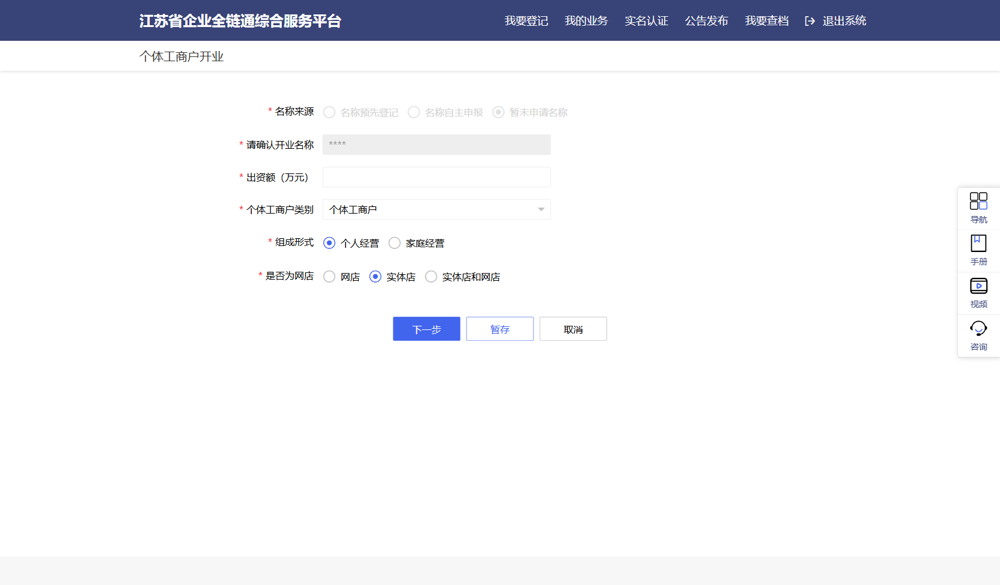
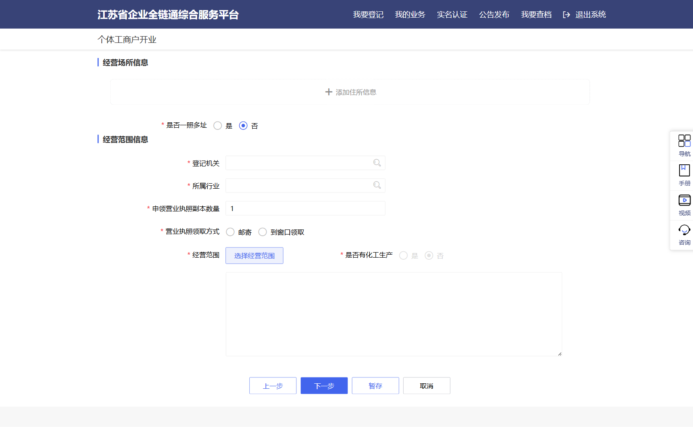
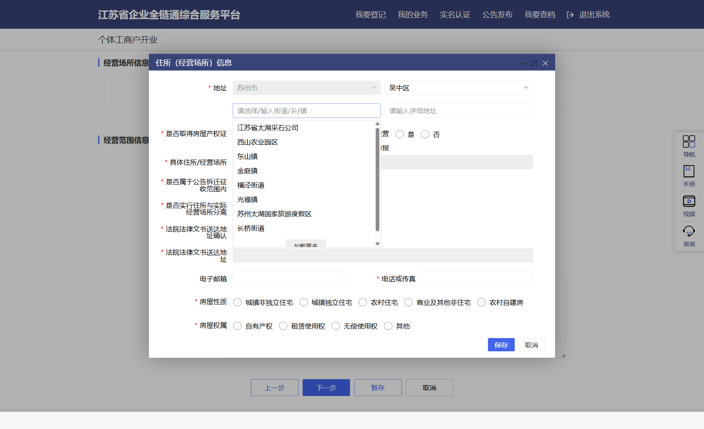
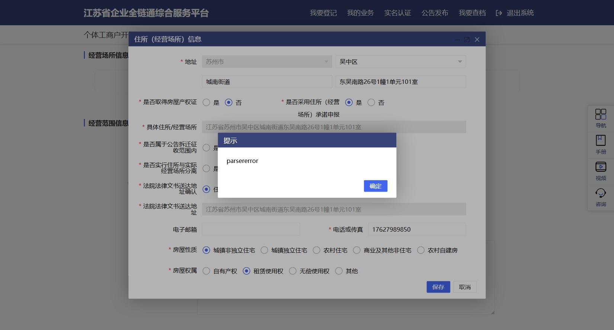

互联网 · 软件 · AI平台开发者专用 · 全流程步骤 + 税务 + ICP备案
苏州2025年：90%的个体工商户申请当日审批通过，全程网办，零费用，无需到窗口。最新依据为2025年7月15日施行的《个体工商户登记管理规定》（国市监注规〔2025〕103号）。
| 能力 | 个体工商户后可用 | 备注 |
|---|---|---|
| 微信小程序收款 | ✓ 企业认证后可开通微信支付 | 认证费¥300/年 |
| 苹果App Store内购 | ✓ 个人账号即可（$99/年） | 不需要营业执照 |
| 华为/腾讯应用商店上架 | ✓ 接受个体工商户账号 | 须软著+ICP备案 |
| 支付宝/微信商户收款 | ✓ 可申请商家账户 | 营业执照+身份证 |
| ICP备案（非商业性） | ✓ 以"单位"性质备案 | 比个人备案更可信 |
| 开具发票（数电票） | ✓ 增值税普通发票 | 税务局登记后申请 |
| 申请软件著作权 | ✓ 约¥350，1-3个月 | 应用商店上架必需 |
| ICP经营许可证（付费网站） | ✗ 仅限有限公司 | 日后注册公司再办 |
| 小米/OPPO/vivo应用商店 | ✗ 仅限企业账号 | 注册公司后可补全 |
互联网/AI工具产品建议起字号，方便后续注册商标和签署合同。个体工商户不能注册公司商标，但字号本身有一定商誉保护。
| 地址类型 | 是否可用 | 所需证明材料 | 费用 |
|---|---|---|---|
| 自有住宅（本人产权） | ✓ 推荐 | 不动产权证/房产证 | 免费 |
| 租住公寓（本人租住） | ✓ 可用 | 房屋租赁合同+房东同意书 | 免费 |
| 父母/家人房产 | ✓ 可用 | 房产证+房主身份证+同意书 | 免费 |
| 商业写字楼（租用） | ✓ 可用 | 租赁合同（需注明商业用途） | 租金成本 |
| 虚拟地址/集群注册 | ✓ 可用 | 园区/孵化器协议 | ¥2000-8000/年 |
| 网络经营场所 | ✓ 新政策 | 电商平台账号URL | 免费（仅适用纯电商） |
推荐：用家庭住址。2025年7月新规明确支持住宅地址用于软件开发、互联网服务、咨询等非干扰性业务。苏州不需要居委会证明（部分旧规要求已取消）。准备好房产证或租赁合同即可。
2025年7月新规：政府部门之间共享数据，大部分信息系统自动核验，无需再提交身份证原件，拍照上传即可。
办理入口：江苏政务服务网 www.jszwfw.gov.cn 登录 → 进入苏州市场监管局企业全链通 scjg.jszwfw.gov.cn/allLinks/business/index/home.jsp。
www.jszwfw.gov.cn → 右上角 登录 → 选 "其他登录方式 → 支付宝账号"提示："手机号 + 短信"登录方式仅适用于已经在江苏政务网建过账号的手机号。新用户首次登录用支付宝最方便，会用支付宝实名信息自动建账号。

scjg.jszwfw.gov.cn/allLinks/business/index/home.jsp
两条路差别：有字号执照显示苏州市XX工作室（个体工商户），更专业、品牌感更强；无字号显示张三（个体工商户），办理更简单、当场拿照。互联网/AI 产品建议有字号，方便后续合同/商标。
| 你的选择 | 入口 | 额外步骤 | 耗时 |
|---|---|---|---|
| 有字号 | 首页底部"其他业务"区 → 新设名称申报 | 先做名称申报拿预选号 → 再回开业登记 | ≈ 1 小时（自动核名）+ 开业流程 |
| 无字号 | 首页中部"我要开办"卡片 → 立即办理 → "我直接申请无字号个体工商户开业" | 无 | 直接进开业表单 |
wsdj.samr.gov.cn/saicmccx/（国家市监总局 · 企业名称查询）nameDeclarationSl.jsp，顶部"我要开办（新设）的是"默认是"企业（含内资、外资）"——必须改选"个体工商户"单选！表单会重新渲染为个体户专版。苏州市睿灵软件工作室（个体工商户）），勾 1 个
****Z*****（中间有大写 Z），60 个自然日有效，过期作废


东吴南路26号X幢X单元X室江苏省苏州市XX区XX街道 + 你的详细地址，无需手动改215104，按你所在街道实际邮编填街道下拉常见误区：下拉打开时只显示 8 项，列表底部有灰色小字"加载更多"链接。不点它后面 8 个街道（含城南街道）永远看不见——很多人误以为自己街道"灰掉不可选"，其实是没加载出来。输入"城南"也不会触发过滤，必须点加载更多。



随时调取电子执照：微信搜索小程序"电子营业执照"或"苏服办"，用实名账号登录后可随时调取，全国通用。
咨询电话：江苏省市场监督管理局 025-83666111（工作日 9:00-11:30, 14:00-17:00） | 苏州市12345政务服务热线
查询工具：在申请表"经营范围"栏，系统提供标准目录下拉选择。也可先在 jyfwyun.com 查询规范表述后复制。2021年起不能自由写文字，须从标准目录选取。
| 业务类型 | 推荐经营范围表述 | 是否需要许可 |
|---|---|---|
| AI对话/创作工具 | 人工智能应用软件开发 | 无（一般项目） |
| 平台软件开发 | 软件开发；应用软件服务 | 无 |
| 技术咨询/接项目 | 技术服务、技术开发、技术咨询 | 无 |
| 用户数据处理 | 数据处理和存储支持服务 | 无 |
| 网站/App运营 | 互联网信息服务 | 非商业性：无；商业性：需ICP许可证（须公司） |
| 在线出版/发行 | 网络出版服务 | 需网络出版服务许可证（须公司，条件严） |
| 网络游戏 | 网络游戏运营 | 需版号（须公司，避免填写） |
策略建议："互联网信息服务"可以填入一般经营项目栏——填了不等于你需要办ICP许可证（那是商业性运营的额外要求）。这样经营范围覆盖面更广，后续拓展业务不必修改执照。
注：经营范围越多越好，只要不含需要前置许可的项目，多填不影响审批。后续可随时免费在市场监管局修改经营范围。
2025年7月新规明确：软件开发、互联网服务、信息技术咨询等不干扰邻居、不接待大量客户的业务，可以用住宅地址作为经营场所，苏州支持此政策。
填写地址格式：填写时要精确到门牌号，例如「江苏省苏州市工业园区仁爱路XXX号XXX室」。地址须与房产证/租赁合同完全一致，不能简写。
逾期未完成税务登记会被处以¥2000以下罚款。30天内必须完成。
重大利好：2023-2027年，个体工商户享受增值税免税 + 所得税减半双重优惠，小规模个人开发者实际税负极低。
| 年收入 | 扣除成本费用 | 应税所得 | 正常税额 | 减半后实缴税 | 有效税率 |
|---|---|---|---|---|---|
| 5万元/年 | 1万 | 4万元 | ¥500 | ¥250 | 0.5% |
| 30万/年（季免税边界） | 5万 | 25万 | ¥39,500 | ¥19,750 | 6.6% |
| 50万/年 | 10万 | 40万 | ¥79,500 | ¥39,750 | 7.9% |
| 100万/年 | 20万 | 80万 | ¥219,500 | ¥109,750 | 11% |
| 级次 | 年应纳税所得额 | 税率 | 速算扣除数 | 减半后实际税率 |
|---|---|---|---|---|
| 1 | ≤ 30,000元 | 5% | 0 | 2.5% |
| 2 | 30,001 – 90,000元 | 10% | 1,500元 | 约5% |
| 3 | 90,001 – 300,000元 | 20% | 10,500元 | 约10% |
| 4 | 300,001 – 500,000元 | 30% | 40,500元 | 约15% |
| 5 | > 500,000元 | 35% | 65,500元 | 约17.5% |
征收方式：2025年大多数互联网/软件行业个体工商户被要求采用查账征收（按实际利润计税），需要保留收支凭证和账目。每季度末申报预缴，次年3月31日前汇算清缴。建议使用"个体工商户"专用记账App（如算账报税、猪八戒记账等）辅助记录。
如果你属于以下群体，注册时可向市场监管局/税务局申请额外减税：
减免涵盖：增值税、城市维护建设税、教育费附加、地方教育附加、个人所得税。需在税务局提交相关证明材料申请。
关键区别：以"个体工商户"（单位）身份备案，比"个人"备案享有更多权限（可以用于商业展示），且在部分云服务商系统中可备案多个域名。主体类型务必选"单位/企业"而非"个人"。